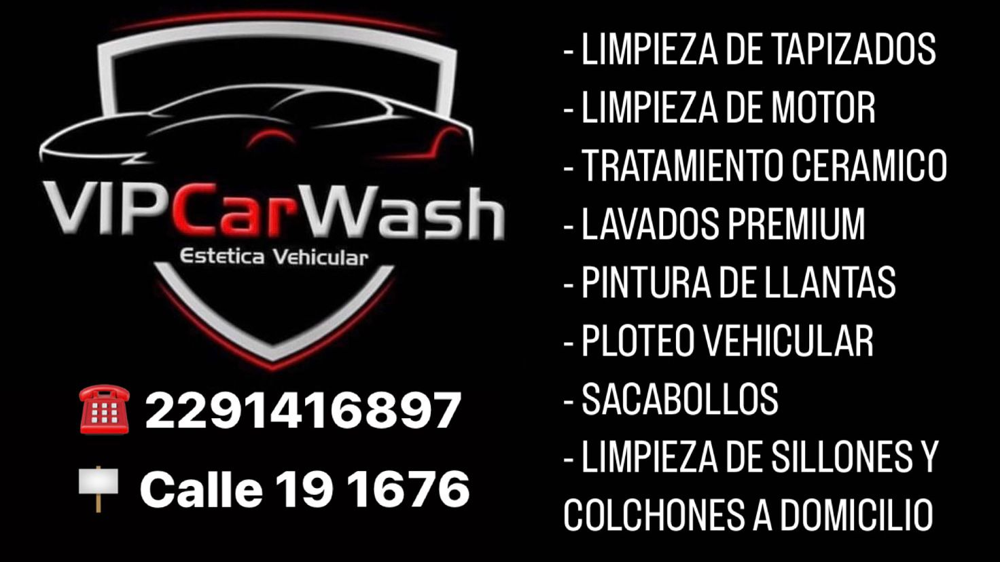
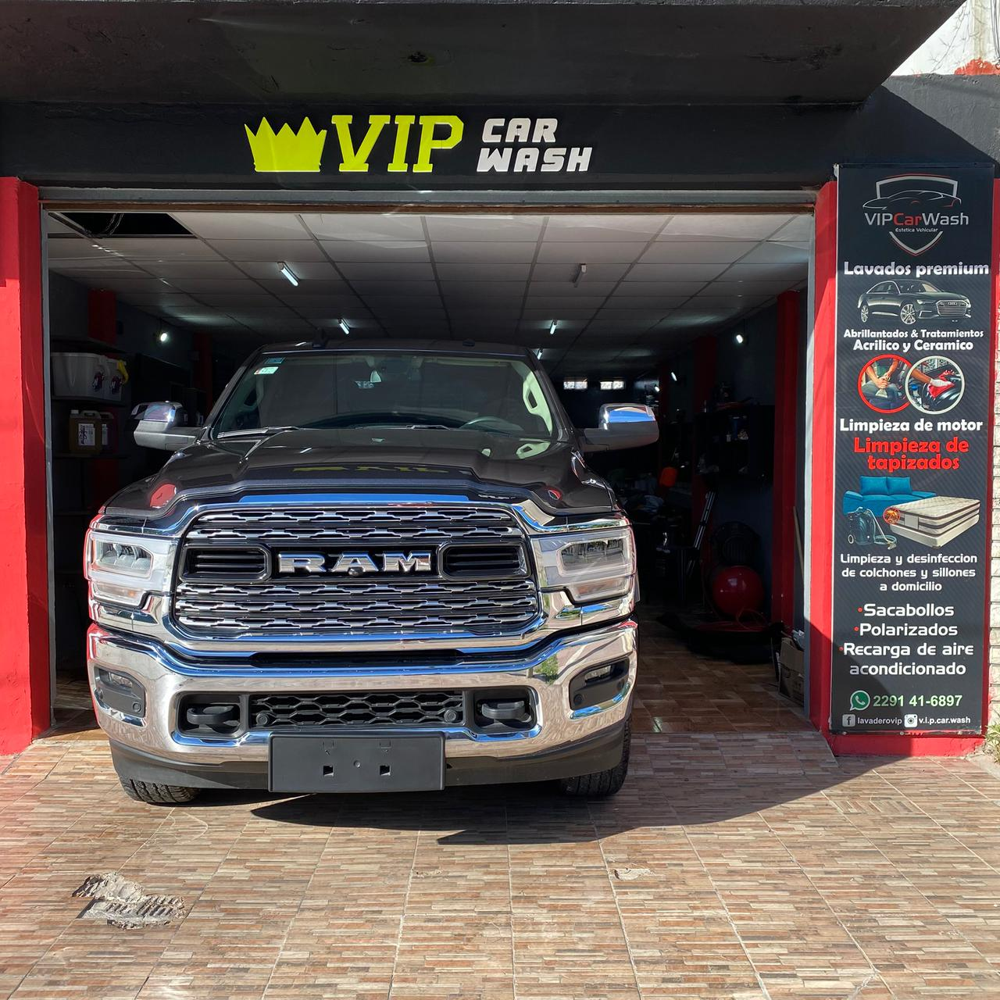
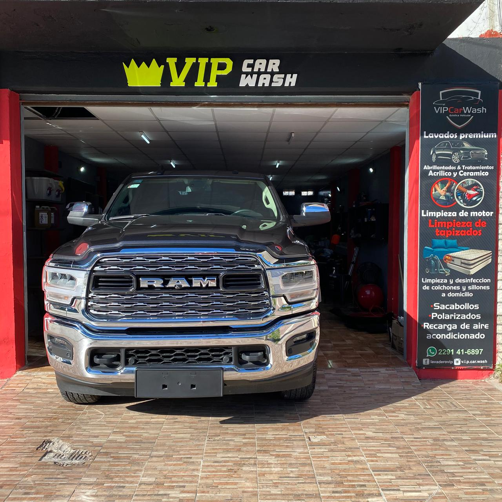

📸 Galería de Trabajos


 

En Lavadero V.I.P Car Wash cuidamos tu vehículo con servicios de alta calidad y atención personalizada.
Ver serviciosLimpieza de tapizados, limpieza de motor, lavado premium, encerado con maquina rotorbital.
ReservarEste servicio cuenta con lavado y descontaminado de carroceria, abrillantado en un solo paso (correccion de barniz, eliminado de marcas superficiales de lavado y obteniendo un brillo excepcional) sellado ceramico (12 meses de proteccion), limpieza de tapizados full, limpieza y acondicionado de motor y cofre.
ReservarLavado de carroceria con espuma de shampoo neutro, encerado de carroceria, aspirado/repaso/nutrido de interior, desinfeccion con amonio cuaternario, nutrido de plasticos exteriores y cubiertas.
ReservarLavado de carroceria con espuma de shampoo neutro, encerado de carroceria, aspirado/repaso/nutrido de interior, desinfeccion con amonio cuaternario, nutrido de plasticos exteriores y cubiertas.
ReservarLavado de carroceria con espuma de shampoo neutro, encerado de carroceria, aspirado/repaso/nutrido de interior, desinfeccion con amonio cuaternario, nutrido de plasticos exteriores y cubiertas.
ReservarLavado de carroceria, limpieza de motor, limpieza de chasis, desarme y limpieza de llantas, limpieza de calipers y pasaruedas, encerado con maquina rotorbital (3 meses de proteccion), aspirado de interiores, descontaminado y nutrido de plasticos y/o cueros.
ReservarDescontaminado de carroceria, correcion de laca eliminando marcas circulares producidas por el lavado y rayas superficiales, abrillantado de realzado de color y brillo, sellado de laca con sellador ceramico (recubrimiento de vidrio liquido) sella al 100% evitando el daño de agentes exteriores y generando repelencia excepcional al agua y aceites.
ReservarDescontaminado de carroceria, pulido y abrillantado en un solo paso logrando eliminar marcas superficiales y brindando un brillo excepcional, sellado con cera fusso coat premium con 12 meses de proteccion.
ReservarLimpieza de motor y cofre con espuma de alto poder desengrasante, hidratacion de plasticos y mangueras con dressing de base acuosa libre de siliconas que permite que no se resequen.
ReservarLijado de plastico cobertor con diferentes espesores de lija al agua dependiendo de el daño de las mismas, pulido y abrillantado en 2 etapas, mas sellado con cera japonesa de alto poder hidrofico.
ReservarLimpieza con maquina de inyeccion y extraccion, logrando una limpieza y desinfeccion optima. Descontaminacion de piso, techo, puertas, baul, consola central y torpedo, dejando un acabado de fabrica. Nuestro producto de limpieza contiene amonio cuaternario para eliminar virus y bacterias. Al finalizar se realiza un lavado de carroceria mas encerado con 2 meses de proteccion.
Reservar
Dirección: Calle 19 numero 1676, Miramar, Buenos Aires
WhatsApp: (2291) 416897
Email: poggialfredo@hotmail.com
Enviar mensaje